この本の使い方
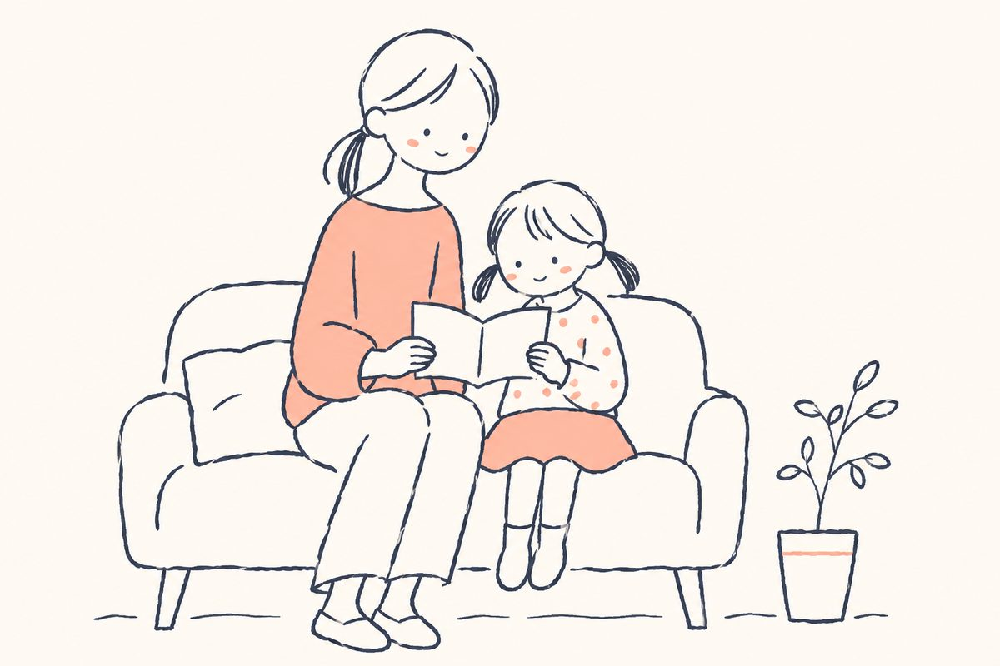
私立小学校を選ぶとき、説明会、見学、ホームページ、パンフレットと、見るものがたくさんあります。けれども、何を見ればよいのかが分からないまま回ると、「どの学校もよさそう」で終わってしまいがちです。
この本では、学校を選ぶときに見るところを9つの章にまとめました。どの学校を選ぶときにも使えるように書いています。
各章には、次の3つをつけました。
- ここを見ましょう：説明会や見学で、目で確かめたいこと
- 説明会で聞いてみましょう：先生に質問するときの例
- わが家で話し合ってみましょう：ご家族で考えておきたいこと
最後に、見学のときに使える「チェックシート」と、ご家族の考えをまとめる「話し合いシート」をつけています。スクリーンショットで保存して、お使いください。
いちばん大切なこと
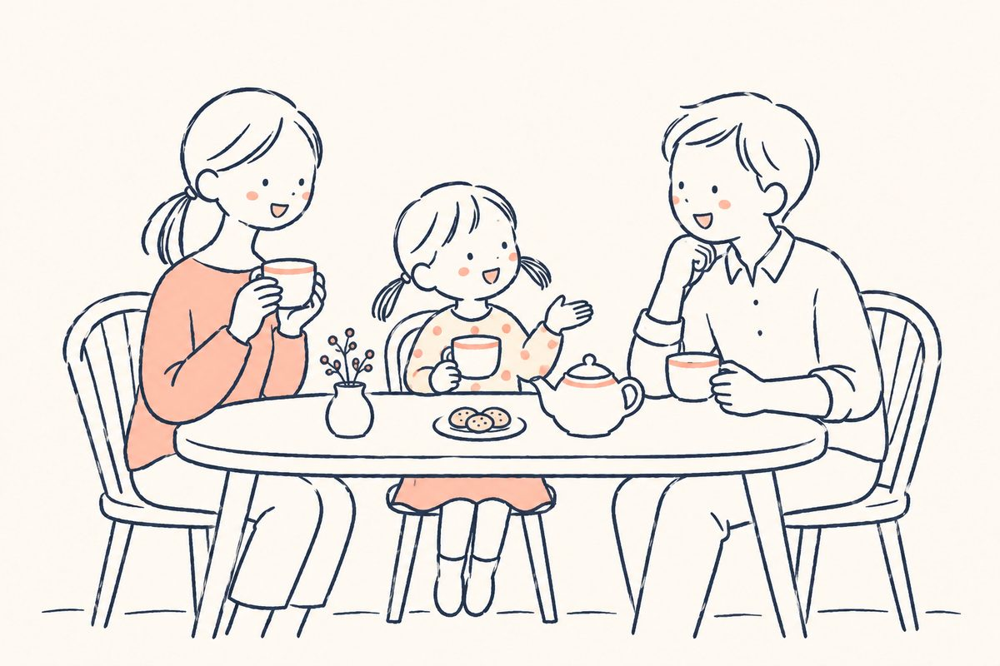
学校選びで、いちばん大切なことがあります。それは、ご家庭の考えと学校の方針が合っているかです。
ご家庭と学校が同じ方向を向いていると、お子さまは迷わずに、笑顔で通うことができます。反対に、家で大切にしていることと、学校で大切にしていることが違うと、お子さまはどちらに合わせればよいのか迷ってしまいます。考え方が合わないまま通い続けるのは、お子さまにも保護者の方にも負担になります。
学校を選ぶことは、「この学校と一緒に、わが子を育てていけるか」を考えることです。学校は、お金を払えば何でもしてくれる場所ではありません。学校と家庭が同じ考えで、一緒にお子さまを育てていく。その相手として、学校を見てみてください。
そのためには、まず、わが家が何を大切にしているかを言葉にしておくことが近道です。この本の最後の「話し合いシート」も、ぜひ使ってみてください。
笑顔で通えるか
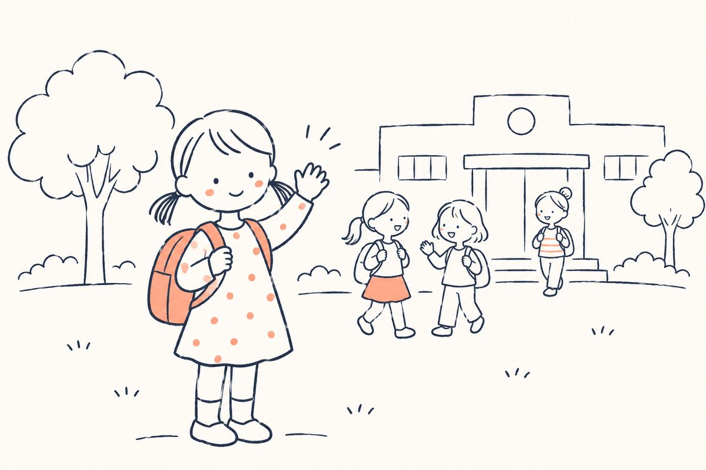
毎日のことだから
学校選びで最初に考えたいのは、お子さまが楽しく、笑顔で通えるかです。
小学校の6年間は、毎日のことです。どんなに評判のよい学校でも、お子さまに合わなければ、毎朝の登校がつらくなります。反対に、お子さまが「この学校が好き」と思えれば、多少遠くても、勉強が大変でも、前を向いて通うことができます。
学校の雰囲気は、学校ごとに違う
学校の雰囲気は、学校ごとに大きく違います。きまりや礼儀を大切にする学校もあれば、子供の自由な発想をのびのびと生かす学校もあります。どちらがよい、悪いではありません。お子さまと、ご家庭に合うかどうかです。
今通っている幼稚園・保育園と雰囲気が違いすぎると、入学してから、お子さまも保護者の方も、行事のたびに戸惑うことがあります。今の園の雰囲気と比べながら見てみると、違いが分かりやすくなります。
お子さまの感じ方を大切に
説明会や見学には、できればお子さまと一緒に行きましょう。帰り道に「どうだった？」と聞いてみてください。「楽しかった」「お姉さんがやさしかった」「図書館が大きかった」。お子さまの言葉には、大人が気づかないことが入っています。
👀ここを見ましょう
- 在校生が、楽しそうに過ごしているか
- 今の幼稚園・保育園と、雰囲気が近いか
- お子さま自身が、その学校をどう感じたか
💬説明会で聞いてみましょう
- 「入学してすぐの1年生は、どんなふうに学校に慣れていきますか」
- 「子供たちが学校でいちばん楽しみにしていることは何ですか」
🏠わが家で話し合ってみましょう
- わが子は、どんなときにいちばん生き生きしているか
- 今の園で、わが子に合っていると感じるところはどこか
通学の時間と安全
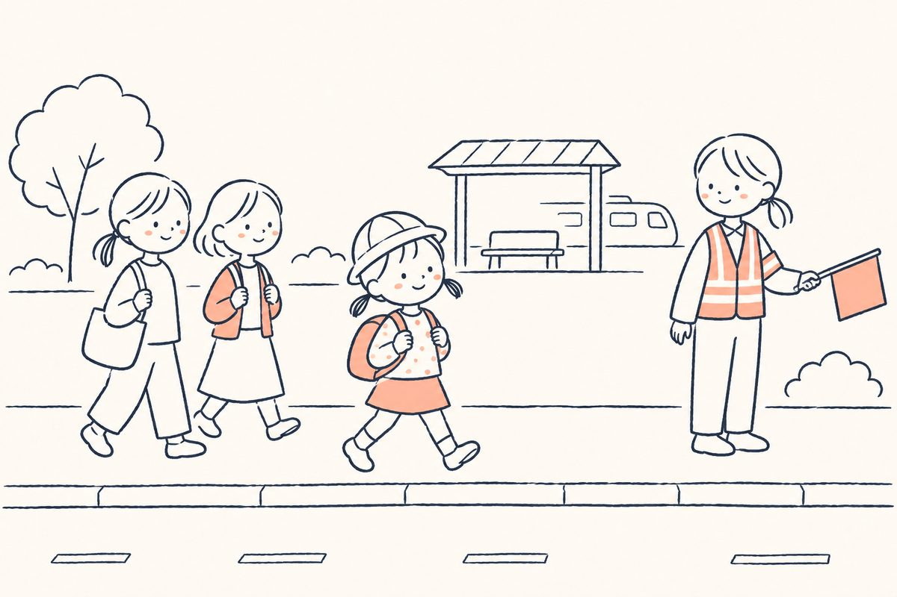
通学時間は、体力と相談
毎日通う道なので、通学時間はお子さまの体力に直結します。電車の乗りかえや、駅から学校までの歩く距離も含めて考えましょう。学校によっては、通学時間の上限を決めているところもあります。募集要項で確かめておきましょう。
体調をくずしたときや、急なお迎えが必要なときに、保護者の方がどのくらいで学校に着けるかも、考えておきたいところです。
通学路の安全
- 駅から学校までの道は、どんな道か。人通りが少なすぎないか
- 通学路が決まっているか。寄り道をしないきまりがあるか
- 何かあったときに、すぐに助けを求められるしくみがあるか
- 警備員や先生が、登下校を見守っているか
災害や事件のとき
- 災害のとき、学校から、どのように、どのくらい早く連絡が来るか
- 交通が止まったとき、学校で子供を預かってもらえるか。水や食料の備えはあるか
- 学校が、防犯のためにどんなしくみを取っているか
1年生の登下校と送り迎え
入学してすぐの1年生が、どのように登下校に慣れていくのかは、学校によって違います。送り迎えをしてよいか、車で送り迎えできるかも、学校ごとに決まりがあります。いつごろまで送り迎えをするのかも、ご家庭で考えておきましょう。
👀ここを見ましょう
- 家から学校まで、実際に何分かかるか（朝の時間帯に、一度通ってみる）
- 駅から学校までの道の様子
- 登下校の時間に、だれが見守っているか
💬説明会で聞いてみましょう
- 「1年生は、いつごろから子供だけで登下校するようになりますか」
- 「災害のとき、保護者への連絡とお迎えは、どのようになりますか」
🏠わが家で話し合ってみましょう
- 朝、何時に家を出ることになるか。家族の朝の流れは無理なく回るか
- 急なお迎えのとき、だれが行けるか
学びの中身を知る
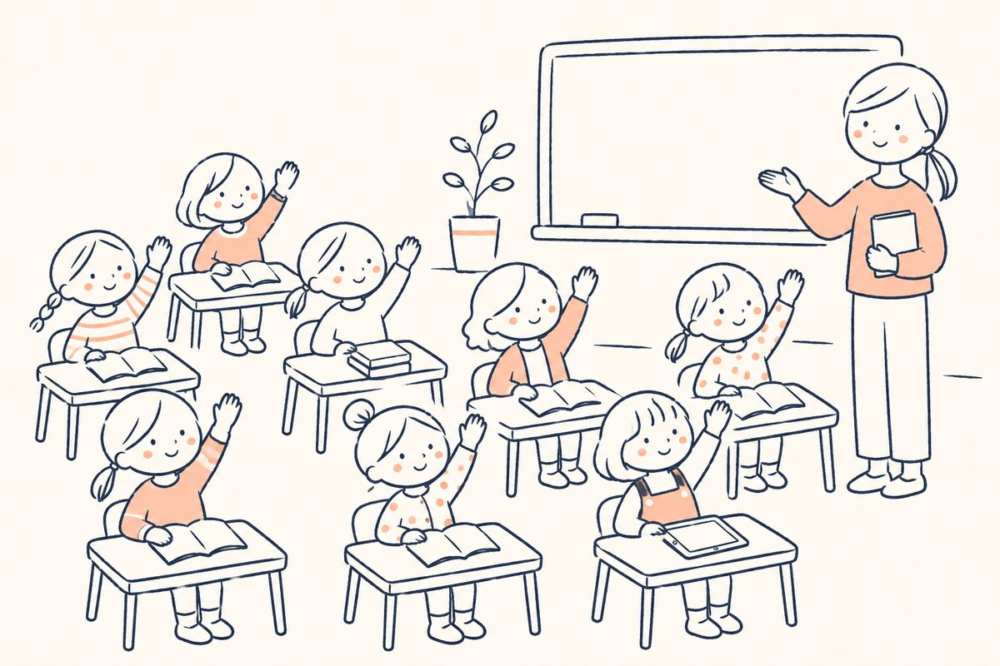
授業の様子
学校の学びは、授業で決まります。説明会で話を聞くだけでなく、できれば授業を見学しましょう。
- 先生が一方的に話す授業か、子供が考えたり話し合ったりする授業か
- 分からない子へのフォローは、どのようにしているか
- 基礎（読み・書き・計算）を、どのように身につけさせているか
宿題と家庭学習
宿題の量や中身も、家庭の過ごし方に関わります。毎日どのくらいの時間がかかるのか、どんな宿題が出るのかを聞いておきましょう。家庭学習を、学校がどのくらい支えてくれるのかも大切です。
タブレットとパソコン
今の小学校では、タブレットやパソコンを使って学ぶのが当たり前になっています。学校でどこまでのことをしているのか、学校に任せてよいのか、家庭や習いごとで補う必要があるのかを確かめましょう。家で使うときの決まりや、フィルタリングなどの安全面も大切です。
英語
英語の授業は、学校によって時間数も中身も大きく違います。何年生から、だれが、どんな授業をしているのか。英語をどこまで学校に任せられるかを聞いておきましょう。
👀ここを見ましょう
- 授業中の子供たちの表情
- 先生と子供のやりとり
- 教室の掲示物やノート
💬説明会で聞いてみましょう
- 「勉強でつまずいた子には、どんなフォローがありますか」
- 「宿題は、毎日どのくらいの時間がかかりますか」
- 「英語は、何年生から、どんな形で学びますか」
🏠わが家で話し合ってみましょう
- 勉強を、どこまで学校に任せたいか
- 家庭で、どのくらい勉強を見てあげられるか
進路の見方
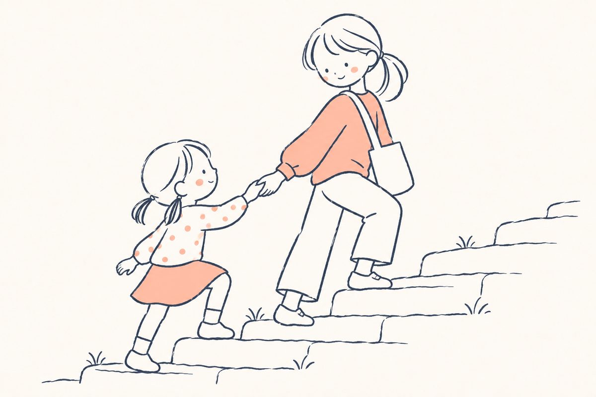
人数より割合で見る
進学実績を見るときは、人数よりも割合で見ましょう。卒業生が何人いて、そのうち何人がその進路に進んだのか。分母がわかると、実際の姿が見えてきます。「○○大学に何人」という数字だけで判断しないことが大切です。
自分で選べるか
将来、お子さまが仕事を持ち、社会で自分の力を生かしていけるか。そこを気にされる保護者の方が増えています。
進学実績の数字の裏には、学校の教育方針があります。
- 子供が自分の意思で進路を選べる学校か
- のびのびと、自分のやりたいことを見つけられる学校か
- 進路を考えるための手助け（卒業生の話を聞く、大学の先生の講義など）があるか
小学校から先の進み方
私立小学校の多くは、中学校・高校とつながっています。
- 小学校からそのまま進むのか。そのために、どんな条件があるのか
- ほかの学校を受験することもできるのか
- 推薦で大学へ進む道があるのか
小学校から高校までの学費に、塾の費用が加わることもあります。家計で続けられるかも、一緒に考えておきましょう（6章）。
👀ここを見ましょう
- 進学実績の「割合」
- 進路を自分で選べるしくみがあるか
- 小学校から先の進み方
💬説明会で聞いてみましょう
- 「卒業生は、どんな進路を選んでいますか」
- 「進路を決めるまでに、学校ではどんな手助けがありますか」
🏠わが家で話し合ってみましょう
- わが子に、将来どんな大人になってほしいか
- 中学校・高校まで同じ学校で学ばせたいか
保護者の出番
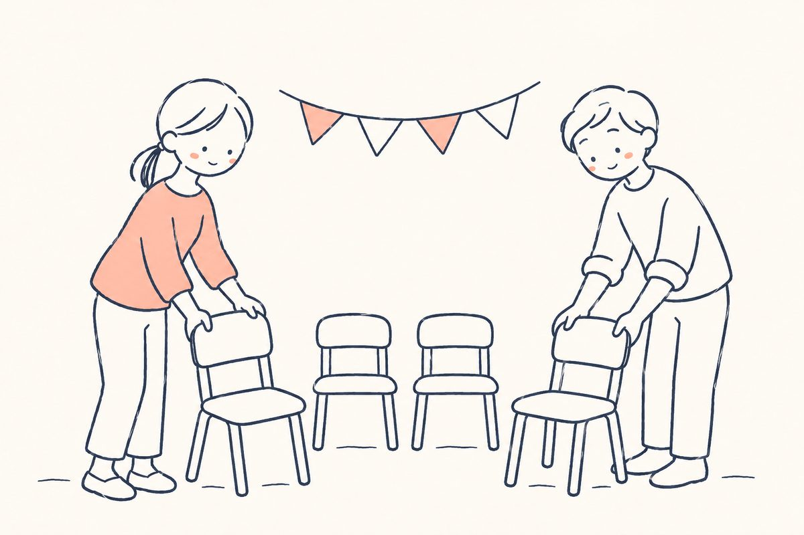
学校に関わる回数
学校によって、保護者が学校に関わる回数は大きく違います。
- 行事は年に何回あるか。保護者が参加するものはどれか
- お弁当の日は週に何回あるか。給食はあるか
- 役員は何年に1回まわってくるか。仕事は多いか
- 参観や行事に、どのくらい来ることが求められるか
働いている保護者の方へ
共働きのご家庭が増えています。仕事をどのくらい休む必要があるかは、入学前に知っておきたいことです。放課後の預かりがあるか、何時まで預かってもらえるかも確かめましょう。
保護者どうしの雰囲気
保護者どうしの雰囲気が合うかも大切です。説明会や行事で、ほかの保護者の方の様子を見てみてください。在校生の保護者の方から、実際の様子を聞ける機会があれば、ぜひ聞いてみましょう。
👀ここを見ましょう
- 行事・お弁当・役員の回数
- 放課後の預かりの有無と時間
- 保護者どうしの雰囲気
💬説明会で聞いてみましょう
- 「保護者が学校に来る行事は、年に何回くらいありますか」
- 「共働きの家庭は、どのくらいいますか」
🏠わが家で話し合ってみましょう
- 行事やお弁当に、だれがどのくらい関われるか
- 仕事の休みは、どのくらい取れるか
お金の見方
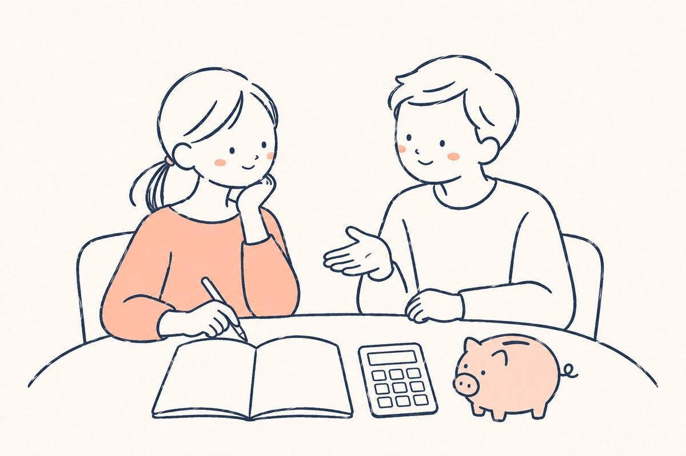
入学金と学費のほかにも、お金がかかります。
- 寄付金
- 積立金（思ったより高いことがあります）
- 設備費
- 制服・かばん・教材などの用品代
- 写真代、行事の費用など、その他の費用
- 通学の定期代
学費だけで比べず、6年間でいくらかかるかで考えてみましょう。中学校・高校まで続けて通う場合は、12年間でも考えておくと安心です。塾や習いごとの費用も合わせて、家計で無理なく続けられるかを確かめておきましょう。
👀ここを見ましょう
- 入学金・学費以外にかかるお金の一覧
- 6年間（または12年間）の合計
💬説明会で聞いてみましょう
- 「学費のほかに、毎年かかる費用はどのくらいですか」
🏠わが家で話し合ってみましょう
- 教育費に、毎月どのくらいかけられるか
- 習いごとや塾を、入学後も続けるか
入試の見方
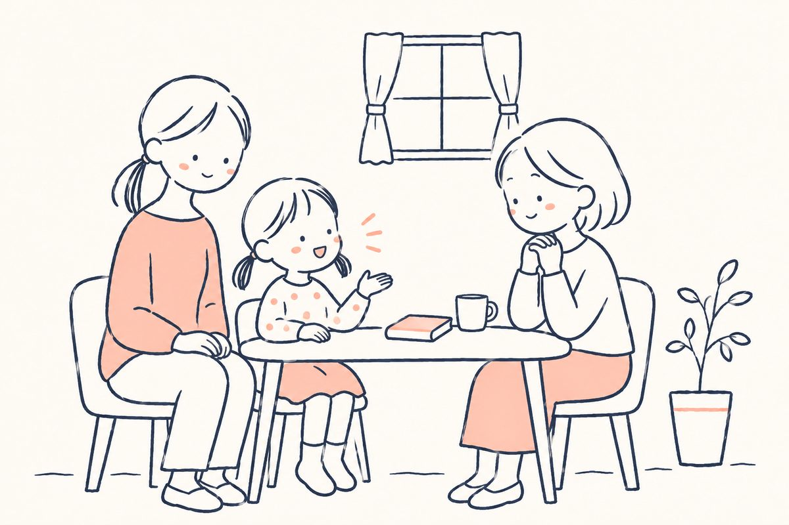
入試で何を大切にしているかは、学校によって違います。
- ペーパー（筆記）を重く見るか
- 面接を重く見るか。小さいうちから、自分の言葉で話せるかを見る学校もあります
- 運動や集団での活動を見るか
- 親子の関わりを見るか
入試の内容には、学校が「どんな子に来てほしいか」が表れています。入試の説明は、学校の考えを知る手がかりにもなります。
服装や持ち物などのきまりがある入試もあります。説明会や募集要項で確かめておきましょう。入試の説明会や体験会がある学校なら、参加しておくと、当日の流れが分かって安心です。
👀ここを見ましょう
- 入試で重く見ていること
- 服装・持ち物のきまり
- 入試の説明会や体験会があるか
💬説明会で聞いてみましょう
- 「入試では、子供のどんなところを見ていますか」
- 「家庭では、どんな準備をしておくとよいですか」
🏠わが家で話し合ってみましょう
- 学校が求める子供の姿と、わが子の姿は近いか
説明会・見学で見るところ
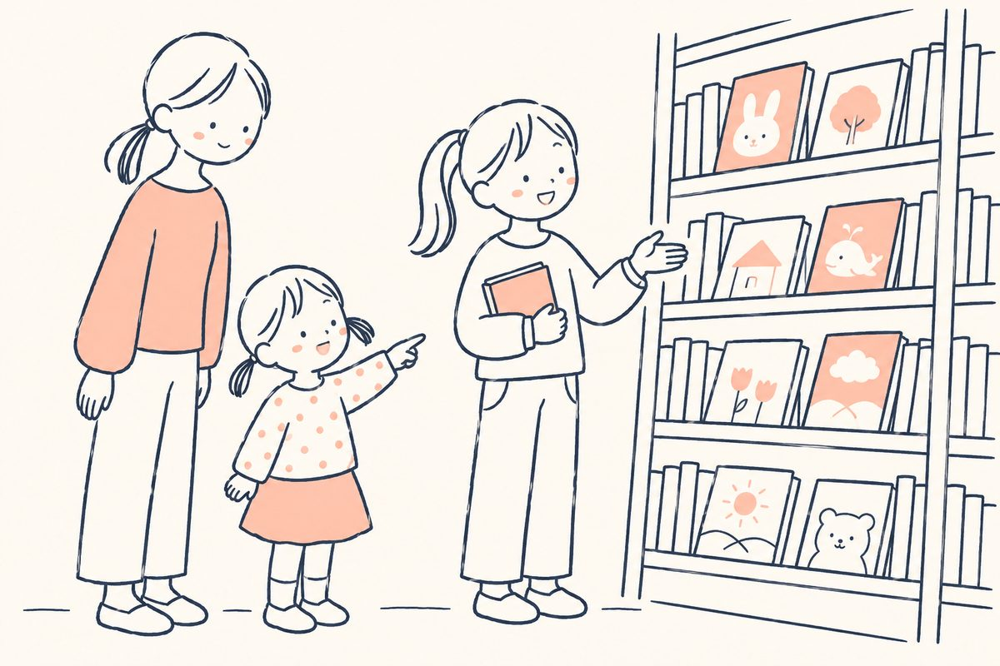
説明会や見学では、話を聞くだけでなく、学校の様子をよく見てみましょう。小さなところに、学校の本当の姿が出ます。
子供たちの様子
- 在校生どうしの何気ない会話
- 先生と子供のやりとり
- 上の学年と下の学年のやりとり
- 帰り道や駅での子供たちの様子
在校生の姿は、数年後のお子さまの姿です。
校舎の様子
- 掃除が行き届いているか。お手洗いはきれいか
- 図書館の本は読まれているか（本がきれいなままか、手に取られた跡があるか）
- 掲示物（作品）は、みんな同じか、一人ひとり違うか。色づかいは明るいか
- ロッカーや靴箱は整っているか
宗教教育
宗教教育を行う学校もあります。宗教の行事や授業があるか、家庭で何かを求められるかを聞いておきましょう。ご家庭に違和感がなければ、問題はありません。
💬説明会で聞いてみましょう
- 「見学のとき、特に見てほしい場所はどこですか」
🏠わが家で話し合ってみましょう
- 見学した学校で、いちばん印象に残った子供の姿は何か
情報の集め方
学校の情報は、いくつかの場所から集めると、確かなものになります。
- ホームページ：教育理念、進学実績、学費は、まずここで確かめましょう
- パンフレット：学校の考え方が、写真と言葉でまとまっています
- SNS（Instagramなど）：写真や動画から、ふだんの雰囲気が伝わります。学校によって雰囲気がまったく違うことが分かります
- 説明会・見学：実際に見て、感じることがいちばんです
- 在校生の保護者：実際の様子や、面倒見のよさを聞くことができます
一つの情報だけで決めず、いくつかを重ねて見ていきましょう。インターネットの書き込みは、だれが書いたのか分からないものも多いので、学校選びの決め手にはしないことをおすすめします。
学校見学チェックシート
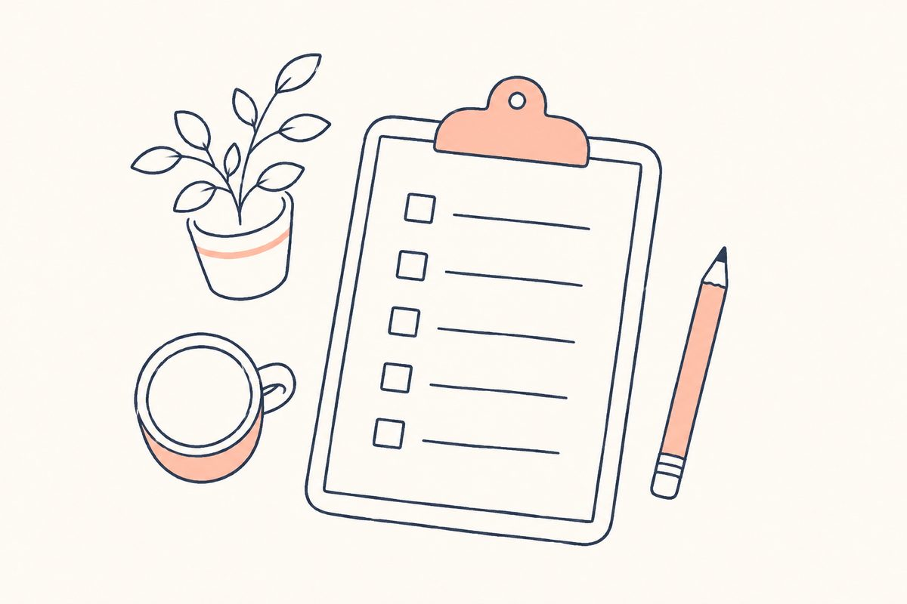
スクリーンショットで保存して、説明会や見学のときにお使いください。
わが家の話し合いシート
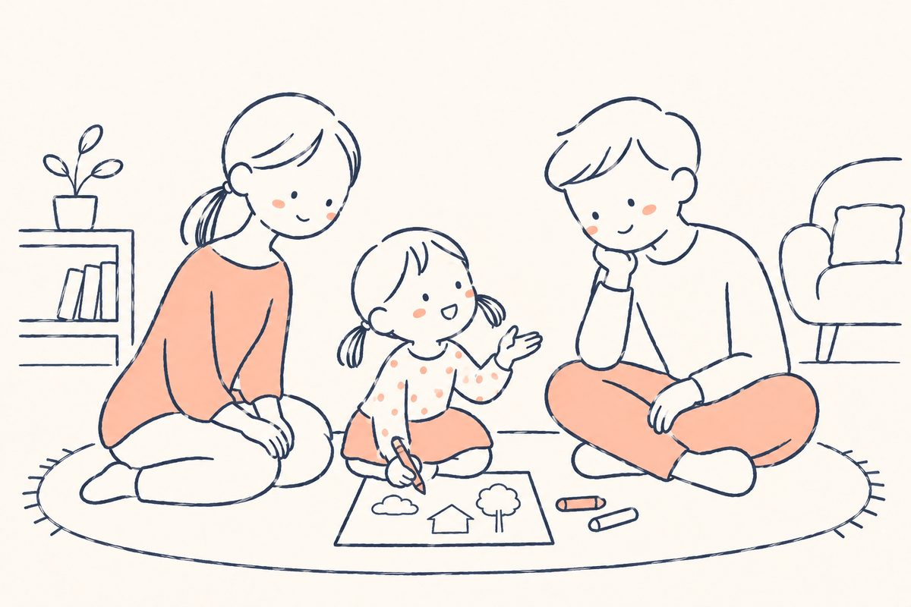
ご家族で話し合って、答えを書きこんでみてください。
わが子が、いちばん生き生きしているのはどんなときか
わが子に、どんな大人になってほしいか
学校に、いちばん期待したいことは何か
勉強は、どこまで学校に任せたいか
毎朝、何時に家を出られるか
行事やお弁当に、だれがどのくらい関われるか
教育費に、毎月どのくらいかけられるか
ここまで読んでくださった方へ
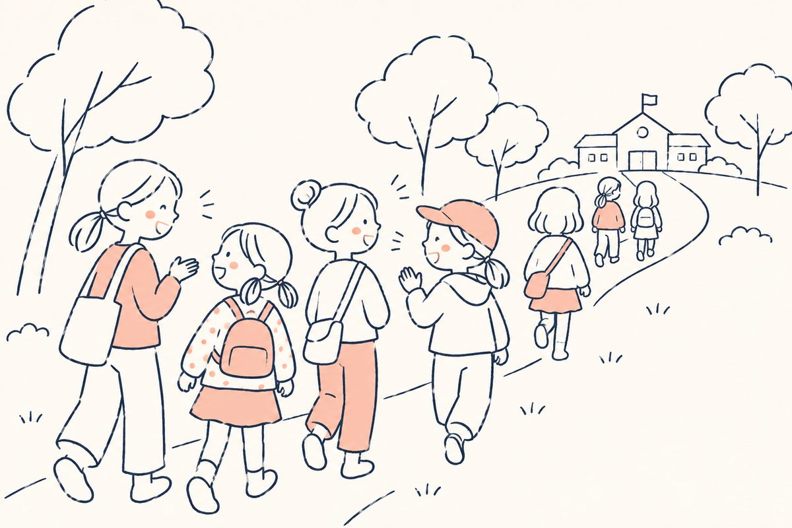
ここまで読んでくださり、ありがとうございました。
学校選びに、どのご家庭にも当てはまる正解はありません。お子さまが笑顔で通えるか。わが家が大切にしたいことと合っているか。この本の「ここを見ましょう」「わが家で話し合ってみましょう」を手がかりに、いくつかの学校を実際に見て、比べてみてください。
小林聖心女子学院小学校も、その候補の一つに加えていただけたらうれしく思います。ふだんの授業や子供たちの様子は、学校説明会や授業見学ツアーでご覧いただけます。
ご質問は、このLINEにメッセージをお送りください（お返事は平日9時から17時）。